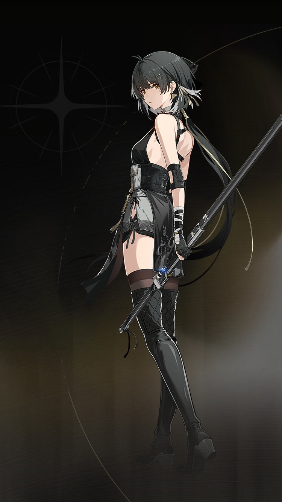

WaveKit
WaveKit

Wuthering Waves Resonator guide
Rover build, teams, weapons, and Echoes
Flexible account anchor with multiple forms.
Spectro / Havoc / AeroSwordHybrid DPS5★ ResonatorGuide checked
Quick build
- Role
- Hybrid DPS
- Team type
- flexible
- Best weapon
- Emerald of Genesis
- Alternate weapons
- Blazing Brilliance / Lumingloss / Commando of Conviction
- Sonata
- Moonlit Clouds or matching element set
- Echo cost
- 4-3-3-1-1
- Main Echo
- Impermanence Heron or Dreamless
- Main stats
- CRIT Rate or CRIT DMG / Element DMG or Energy Regen / ATK%
Stat priority
- CRIT Rate / CRIT DMG balance
- Spectro DMG or ATK%
- ATK% or HP% if the kit scales that way
- Energy Regen only if the rotation needs it
Team direction
Rover is best handled by matching their role with the teammates you actually own.
WaveKit treats Rover as flexible. Use the team helper to match them with your owned roster instead of forcing one fixed team.
Useful teammates
Best helpers
CiacconaShorekeeperVerinaSanhua
Good alternatives
YangyangMortefiBaizhi
Safer third slots
ShorekeeperVerinaBaizhi
Simple play pattern
- Use Rover as a setup piece: apply their buff, effect, or off-field pressure first.
- Swap back to the carry once their useful window is active.
- If their setup feels late, add Energy Regen before chasing more damage.
Build priority
- Difficulty
- Beginner friendly
- Safety
- Bring a healer if learning
- Data note
- Guide checked
Rover is most valuable when their buff, element, or mechanic matches the carry you want to build.